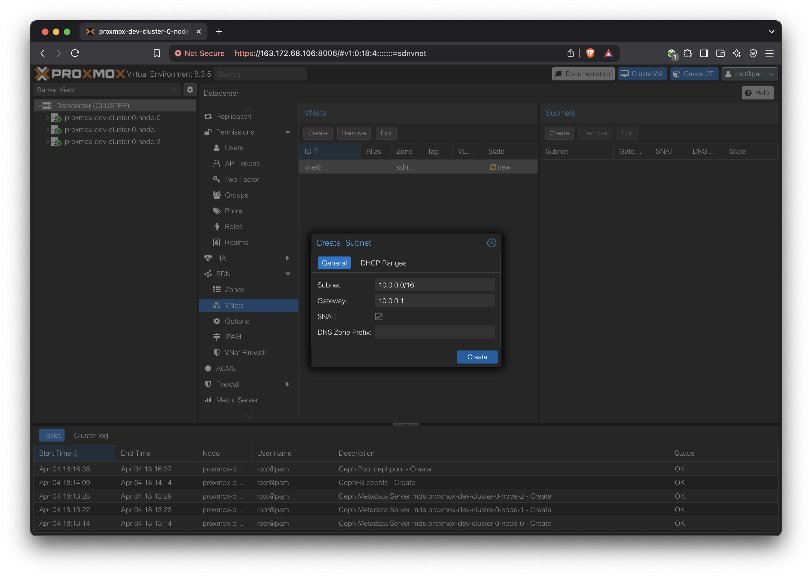
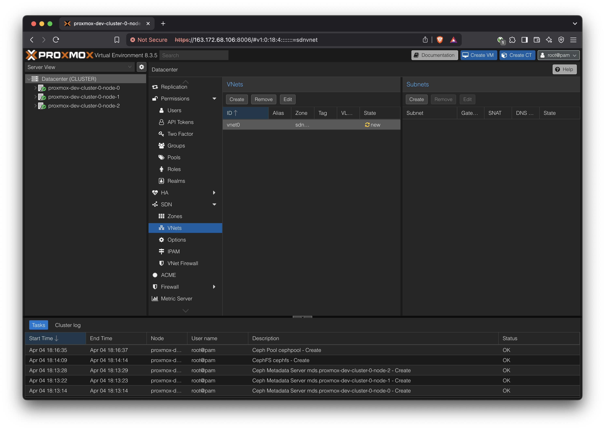

Generating public/private ed25519 key pair.
Enter file in which to save the key:
Name the key pair something memorable like yundera-developer
Passphrase is optional but recommended.
This will create two files in ~/.ssh:
yundera-developer
yundera-developer.pub
The *.pub file is the public key that you need to upload to Scaleway and attach to your server when you create the server.
The file without the *.pub extension is the private key.
Rent Servers
Rent three Scaleway Dedibox START-2-L servers.
This section does not have an automated playbook because Scaleway Dedibox rental is a month-long commnitment and initial OS install can take up to 1 hour. These considerations made it infeasible to build and test automated scripts within the scope of this report.
Should that become a relevant goal, Scaleway offers its own APIs and the Terraform has a Scaleway provider already built-in, which will make the task straightforward.
Since the latest version of Proxmox VE that Scaleway offers pre-installed is an outdated (7.x) one, we will install Proxmox VE 8.x ourselves from a Debian 11 base installation. In the process we’ll upgrade Debian from 11 to 12 also.
The default partitioning uses RAID1. We need to have one of the drives dedicated for Ceph storage. Therefore, change the partition to not use RAID. On the first drive, keep the Swap, /boot, and / partitions. On the second drive, replace everything with a single ext4 partition. For now we’ll mount that drive at /data but this path doesn’t matter since we will be wiping this drive later on.
In addition, we need to set up SSH key access to the server. Click or add a new one here button. Copy the contents of the public SSH key (yundera-developer.pub in the previous step) here.
Confirm in summary and wait until the servers boot up and installs the OS. The website says this can take up to an hour. Typically it takes around 15 to 30 minutes.
Repeat this for all servers.
Install Proxmox VE 8
We use Ansible to automate the installation and upgrade of Proxmox VE 8.
We prefer starting from a Debian image instead of using the provided Proxmox VE 7 image because it allows us to use Ansible for more things.
At this point, we should be able to access all three Proxmox web UIs.
Create Proxmox Cluster
This step cannot be automated via Ansible due to a quirk of the ‘pvecm’ command - specifically, it requires the root password to be entered (even when key-based SSH is set up between the servers) but it cannot be scripted with STDIN or even ‘expect’. More work is required to find a workaround.
Log into the first of the three hosts. We should see a single host in the ‘Datacenter’ list.
Create Metadata servers (one active, two standby). Then, create a CephFS storage. CephFS storage is a simple shared file system among the nodes. We will use it to store the VM image base ISOs.
Create a new pool for RBD, which is where the VMs will store their state.
Note: All Ceph related changes are shared across all nodes, so we can do these operations from any node’s Proxmox web UI.
Note that CephFS storage is different from the Ceph RBD storage we defined above. CephFS is just a convenient shared directory to keep metadata like OS ISOs, and RBD is where the actual VMs will store their content.
The first part, installing dnsmasq , is not necessary because it is already done by the initial Ansible setup.
When defining the subnet, consider using a larger subnet mask like /16 to allow for a bigger network, such as: 
IP forwarding is required, which is done by: echo 1 > /proc/sys/net/ipv4/ip_forward This was already applied in the initial Ansible playbooks, so we don’t have to worry about it
Remember to ‘Apply’ changes from the ‘SDN’ view.
Create a VM
Download OS ISOs
Upload a Ubuntu 24.04 LTS image to the CephFS storage. Since that storage is shared, it means that all hosts within this cluster will be able to launch VMs using that ISO.
In Storage, select the Ceph RBD. The disk size is not meaningfully changeable after this, so pick carefully. (More accurately, we can change the disk size but we cannot change the boot partition without rebooting and complex steps)
In CPU, enter the maximum number of cores that will ever be used by this VM at the top ‘Cores’. It cannot exceed the number of physical cores on the host.
Enter the actually allocated number of cores in the bottom ‘VCPUs’.
In Network, a vnet created in the above SDN (Software Defined Network) should show up. This can be thought of as an internal network for the VMs, with the Proxmox cluster providing an internet gateway and a DHCP server.
These are all just bash commands, so we can do it from the VM’s own terminal, or SSH into it from the host. At this point, the VM doesn’t have an IP address so we won’t be able to SSH into it from outside the cluster.
Is required. The https://pve.proxmox.com/wiki/Hotplug_(qemu_disk,nic,cpu,memory) docs say that the memory line is only required for kernel older than 4.7, but on Debian 12 with Kernel 6.1, it was still necessary. If left out, the VM will only see 1GB of RAM.
Edit /etc/default/grub
vi /etc/default/grub
Find the GRUB_CMDLINE_LINUX_DEFAULT line and add movable_node
Now, we are able to freely scale the CPU and RAM up and down using the Proxmox web GUI → Hardware.
Note that for most system monitoring programs, changes to the CPU count won’t be shown unless you re-open the program. Typically, changes in RAM capacity will show up instantly.
For convenience, install some commonly used packages that are used later
The user should be directed to run this once at the beginning.
In Proxmox, a new VM template is created.
This VM template has full CPU and RAM vertical scalability, along with Backblaze mount setup script.
The Setup process for the POC is now complete. The next section will demonstrate starting up a VM based on the above template and run some experiments to verify the vertical scaling capabilities.
CasaOS Installation
On top of the Ubuntu + Backblaze template, we install CasaOS to create the final template.
{kind=link}
{kind=link}
{kind=link}
{kind=link}
{kind=link}
{kind=link}
{kind=link}
{kind=link}
{kind=link}
{kind=link}
{kind=link}
{kind=link}
{kind=link}
{kind=link}
{kind=link}
{kind=link}

{kind=link}
{kind=link}
{kind=link}
{kind=link}

{kind=link}
{kind=link}
{kind=link}
{kind=link}
{kind=link}
{kind=link}
{kind=link}
{kind=link}
{kind=link}
{kind=link}
{kind=link}
{kind=link}
{kind=link}
{kind=link}
{kind=link}
{kind=link}
{kind=link}
{kind=link}
{kind=link}